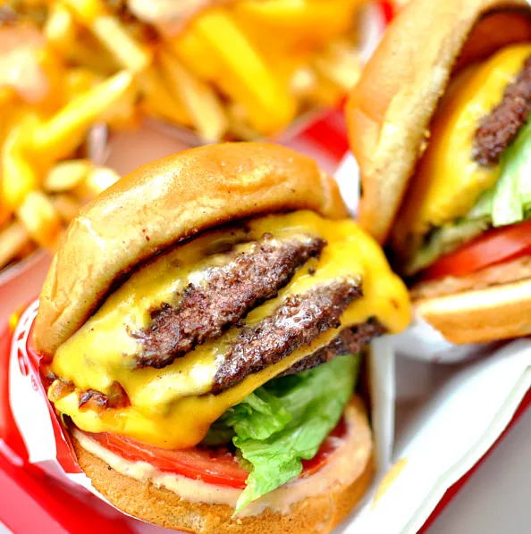

Home
In-n-out

Description
In-n-out is a popular burger that is one of the
best burgers in the world. It is known for its fresh
ingredients, simple menu, and secret menu items. The burger
consists of a beef patty, lettuce, tomato, cheese, and a special sauce, a
ll served on a toasted bun. It is a favorite among burger enthusiasts and
has a cult following.
Ingredients
- Bread
- cheese
- lettuce
- tomato
- onions
- beef
- Thousand Island dressing
Steps
- Preheat a grill or stovetop griddle to medium-high heat.
- Season the beef patty with salt and pepper on both sides.
- Place the beef patty on the grill and cook for about 3-4 minutes on each side, or until it reaches your desired level of doneness.
- While the patty is cooking, toast the burger bun on the grill for about 1-2 minutes until lightly browned.
- Once the patty is cooked, place a slice of cheese on top and let it melt for about 30 seconds.
- Assemble the burger by placing the cooked beef patty with melted cheese on the bottom half of the toasted bun.
- Add lettuce, tomato slices, and onions on top of the patty.
- Spread Thousand Island dressing on the top half of the bun and place it on top of the assembled ingredients.
- Serve immediately and enjoy your homemade In-n-out burger!